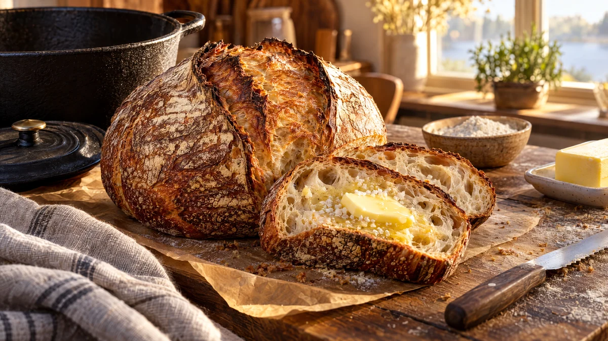

RESTFEST · RECEPTBröd · Fika & bakning
Långjäst grytbröd utan knådning
Mjöl, vatten, salt och en nypa jäst rörs ihop på fem minuter och får jäsa i lugn och ro över natten. Brödet gräddas i en het gjutjärnsgryta och får en mörk, knastrande skorpa och en luftig, blank inkråm med stora hål. Det sjunger när det svalnar, och ser ut att komma från ett surdegsbageri.
- Förberedelse
- 10 min + 12–18 tim jäsning + 1 tim
- Tillagning
- 50 min
- Portioner
- 1 bröd
- Nivå
- Nybörjare
 Det här behöver du
Det här behöver du
Tryck på + vid det du behöver köpa.
Gör så här
- Rör ut jästen i vattnet i en stor bunke. Använder du torrjäst, blanda den med mjölet i stället.
- Tillsätt salt, vetemjöl och rågmjöl och rör ihop till en kladdig, ojämn deg med en slev. Den ska inte knådas.
- Täck bunken och låt den stå i rumstemperatur i 12–18 timmar, tills degen har dubblats och är full av bubblor.
- Mjöla bakbordet och vänd ut degen. Vik kanterna in mot mitten några gånger, så att den blir en rund boll. Lägg den med skarven nedåt på ett mjölat bakplåtspapper och låt jäsa under en handduk i 1 timme.
- Ställ en gjutjärnsgryta med lock, ca 4 liter, i ugnen och sätt ugnen på 250 grader. Låt grytan bli het i 30 minuter.
- Lyft degen med pappret och sänk ner den i den heta grytan. Lägg på locket och grädda i 30 minuter.
- Ta av locket, sänk till 230 grader och grädda 15–20 minuter till, tills skorpan är djupt brun.
- Låt brödet svalna på galler i minst en timme innan du skär i det. Det fortsätter att gräddas av eftervärmen.
Dekoration och servering
- Skär ett kryss eller ett långt snitt i degen med en vass kniv precis innan den läggs i grytan, så öppnar den sig vackert.
- Servera brödet på en träbräda med salt smör, eller till soppa och ost.
- Ett dagsgammalt bröd blir perfekt till panzanella (recept 41), krutonger eller fattiga riddare (recept 5).
- Brödet håller 2–3 dagar i en påse av papper eller tyg och kan frysas skivat.
Mått och ugnstemperaturer
Måtten är svenska (dl, msk, tsk, krm). Ugnstemperaturerna gäller vanlig ugn med över- och undervärme; med varmluft, sänk med 20 grader.